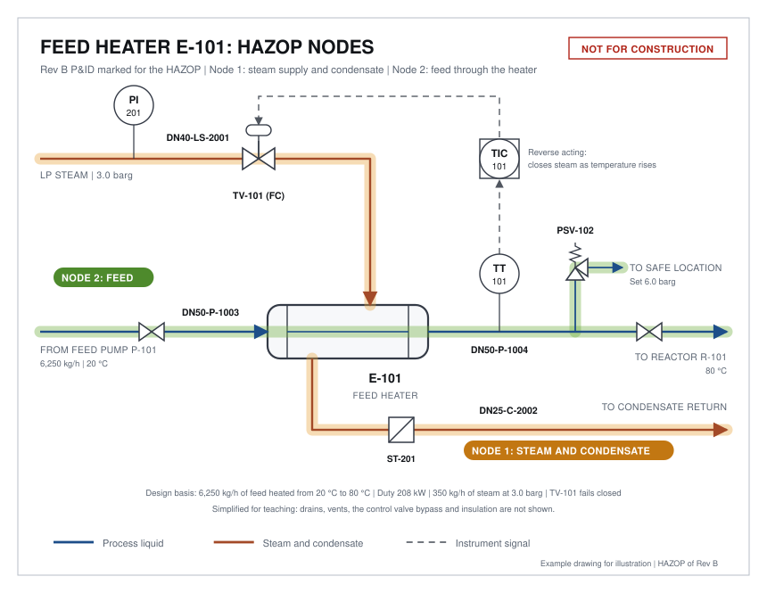
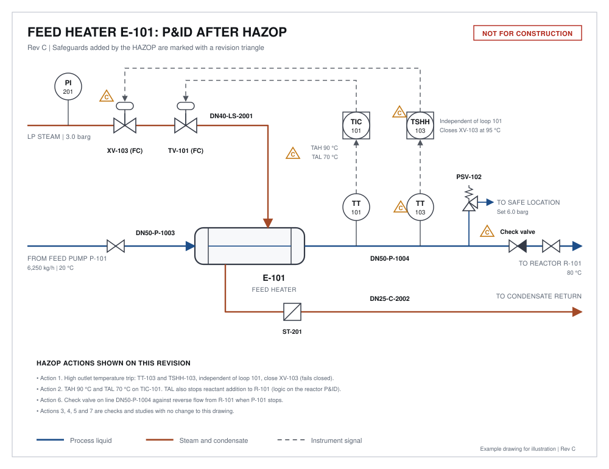

Contents
A HAZOP, short for hazard and operability study, is a structured way of asking what could go wrong with a design. A small team takes the P&ID one section at a time and applies a fixed set of guide words to each. The method is described in the international standard IEC 61882.
Post 1 showed how hot a reactor could get if its cooling failed. This post runs a HAZOP on a smaller and simpler item: the steam-heated feed heater E-101 from How to Read a PFD and a P&ID. It heats the feed that goes to that reactor. Post 3 covers what happens to the design after the study.
How a HAZOP works
A node is a section of the drawing with one design intent, such as "supply steam to E-101". A deviation is a guide word combined with a process parameter.
Table 1. Guide words and the deviations they produce
| Guide word | Meaning | Example deviations |
|---|---|---|
| No | None of the intent is achieved | No flow, no steam |
| More | A quantitative increase | More flow, more temperature, more pressure |
| Less | A quantitative decrease | Less flow, less temperature |
| Reverse | The opposite of the intent | Reverse flow |
| As well as | Something extra happens | Contamination, a second phase |
| Other than | Something different happens | A leak, a wrong material, start-up and shutdown |
The team needs at least a facilitator, a scribe, a process engineer, an experienced operator and an instrument or control engineer. A drawing the size of this one takes two to three hours.
The nodes

- Node 1: steam supply and condensate. Intent: supply 350 kg/h of steam at 3.0 barg to heat the feed to 80 °C, and return the condensate.
- Node 2: feed through the heater. Intent: pass 6,250 kg/h of feed from P-101 through the tubes to reactor R-101.
Node 1: steam supply and condensate
Table 2. HAZOP worksheet, node 1
| Deviation | Possible causes | Consequences | Existing safeguards | Action |
|---|---|---|---|---|
| More steam flow | TV-101 fails open; TT-101 reads low; TIC-101 left in manual | Feed leaves hotter than 80 °C, up to steam temperature. Extra heat goes into R-101 and speeds the reaction. | TIC-101 (but its failure is one of the causes) | 1 |
| Less or no steam flow | TV-101 fails closed; steam trap ST-201 blocked and the shell floods; steam supply lost | Feed reaches R-101 cold. The reaction slows while the feed continues, so reactant accumulates (see Post 1). | TIC-101 shows the temperature, but nothing alerts the operator | 2 |
| More steam pressure | Steam header pressure regulator fails | Shell side pressure above 3.0 barg. Overpressure if the shell is rated lower than the header. | None shown on this drawing | 3 |
| Other than: tube leak | Corrosion or fatigue of a tube | Feed at 3.5 barg leaks into the shell at 3.0 barg and contaminates the condensate return. | None | 4 |
The first row shows the most common finding in a HAZOP. The control loop that could cause the deviation is listed as the safeguard against it. If TT-101 fails reading low, TIC-101 opens the steam valve, so TIC-101 cannot also be what protects against overheating. A safeguard must be independent of the cause.
The second row connects to Post 1. A heater fault that looks harmless, a cold feed, slows the reaction in R-101 while the feed carries on. Reactant accumulates, and the MTSR rises with it.
Node 2: feed through the heater
Table 3. HAZOP worksheet, node 2
| Deviation | Possible causes | Consequences | Existing safeguards | Action |
|---|---|---|---|---|
| No flow | P-101 stops, or both manual valves are closed while steam is on | Liquid trapped in the tubes is heated, expands and can boil. Overpressure of the tubes and line. | PSV-102, set at 6.0 barg | 5 |
| Reverse flow | P-101 stops while R-101 is under pressure | Reactor contents flow back through E-101 towards the feed tank, where they may react. | None | 6 |
| More flow | Feed pump speed raised; flow control on the reactor P&ID fails | Addition faster than three hours. Heat release exceeds jacket capacity (see Post 1). | Flow control on the reactor P&ID (outside this node) | 7 |
| Less flow | Partial blockage, pump wear | TIC-101 reduces the steam to match. Addition takes longer, which is the safe direction. | TIC-101 | None |
Not every deviation needs an action. Less flow is handled by the existing control loop and moves the process in the safe direction, so the team records it and moves on.
The actions
Table 4. Action list
| No. | Action | Result |
|---|---|---|
| 1 | Add an outlet temperature trip independent of loop 101: TT-103 and TSHH-103 close a new steam shutoff valve XV-103 at 95 °C | Rev C drawing |
| 2 | Add high and low temperature alarms on TIC-101. The low alarm at 70 °C also stops reactant addition to R-101 | Rev C drawing |
| 3 | Confirm the shell design pressure is at least the maximum steam header pressure, or that the header has its own relief | Check |
| 4 | Decide how a tube leak will be detected before condensate returns to the boiler | Study |
| 5 | Confirm PSV-102 is sized for the blocked-in heating case, and define where it discharges | Check |
| 6 | Add a check valve on line DN50-P-1004 against reverse flow from R-101 | Rev C drawing |
| 7 | Confirm the feed rate to R-101 has a high flow alarm or trip that keeps the addition at three hours or longer | Reactor node |
Each action gets a named owner and a due date. Three of them change the drawing. The others are checks that may change it later, and action 7 belongs to the reactor node.

Five rules for a useful HAZOP
- Use a current, complete P&ID. The study is only as good as the drawing. Freeze it before the meeting.
- Record causes, not just deviations. "More temperature" is not a finding. "TV-101 fails open" is.
- Test every safeguard for independence. A device that fails along with the cause does not count.
- Write actions the owner can close. "Review the heater" cannot be closed. "Add an independent high temperature trip" can.
- Close the actions before start-up. An open HAZOP action at start-up is an accepted risk. Someone should sign for it.
Takeaway. Work through the drawing node by node, and check that each safeguard is independent of the cause. On the feed heater, two hours of review produced seven actions, three of them changes to the P&ID.
The reaction, temperatures and equipment in this series are an illustrative example. The calculations are screening estimates. They do not replace calorimetry testing, a formal hazard study or a design by a qualified engineer.